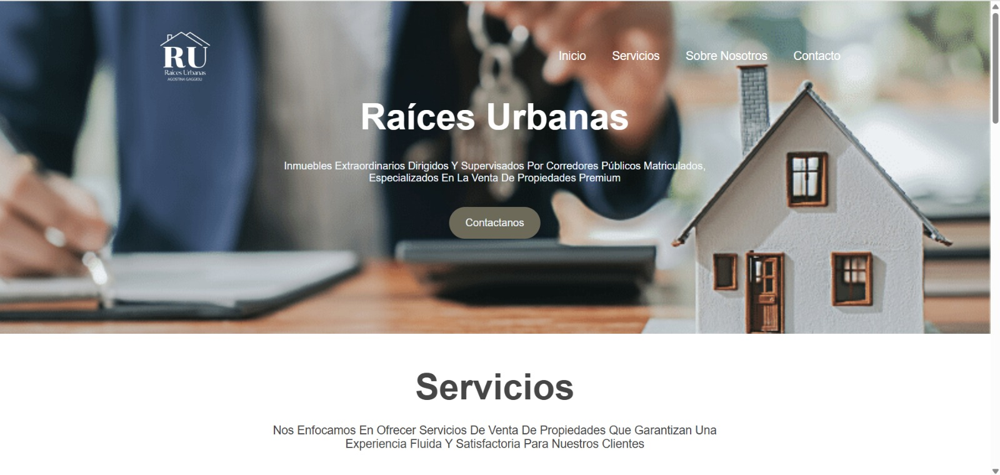
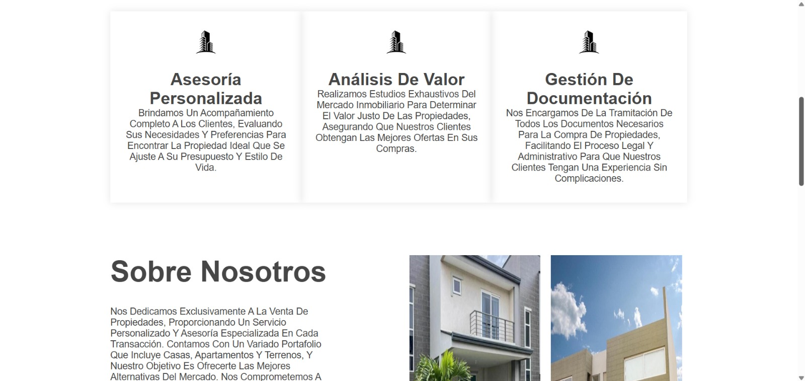
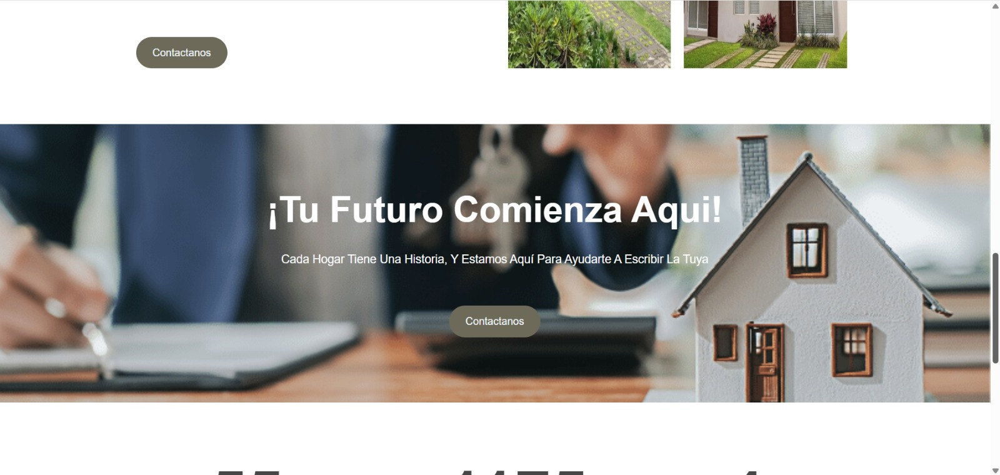
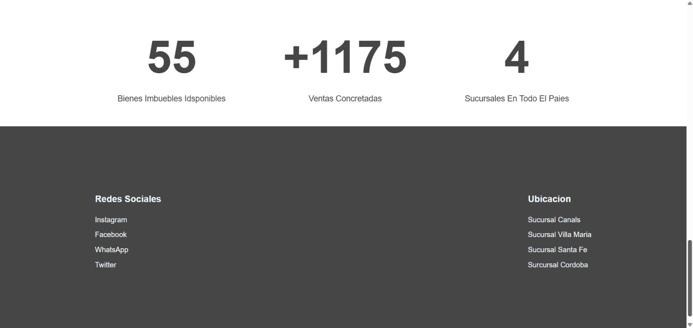

.png)
SOBRE MI
Estudiante avanzada y futura profesional IT
estudiante en la etapa final de la carrera Analista Programador en la Universidad Abierta Interamericana (UAI), actualmente desarrollando mi tesis sobre un sistema contable para una empresa real. Me apasiona la programación y disfruto resolver problemas combinando lógica y creatividad. Tengo conocimientos en Python, JavaScript, C#, C, bases de datos relacionales y no relacionales (SQL, MySQL, MongoDB), y tecnologías como XML, Bootstrap, Git y GitHub. Me considero una persona curiosa, autodidacta y comprometida, con muchas ganas de insertarme profesionalmente en el mundo IT y seguir aprendiendo día a día. He desarrollado proyectos personales y académicos que me ayudaron a fortalecer tanto mis habilidades técnicas como mi capacidad para trabajar de forma organizada y enfocada.
Mis Tecnologias
Python
Intermedio
JavaScript
Intermedio
C#
Intermedio
C
Intermedio
Bootstrap
Intermedio
Git
Intermedio
GitHub
Intermedio
MySQL
Intermedio
MongoDB
Intermedio
SQL
Intermedio
XML
Intermedio
Formacion Academica
Universidad Abierta Interamericana
Analista Programador
Actualmente me encuentro cursando la tesis final de la carrera Analista Programador en la Universidad Abierta Interamericana (UAI). Esta carrera me brindó una sólida formación en programación, bases de datos, análisis de sistemas y desarrollo de software. A lo largo de la cursada, adquirí conocimientos tanto teóricos como prácticos para diseñar, desarrollar e implementar soluciones informáticas, abarcando distintas tecnologías y metodologías de trabajo. La formación también incluyó aspectos clave como la lógica de programación, estructuras de datos, arquitectura de software, y la gestión de proyectos, preparándome para desempeñarme en equipos de desarrollo o liderar proyectos propios.
Soy Henry
Full Stack JavaScript
Actualmente me encuentro cursando la carrera de Desarrolladora Full Stack con JavaScript en Soy Henry, con finalización estimada en noviembre de 2025. La formación abarca tecnologías modernas como HTML, CSS, JavaScript, React, Node.js, Express y Sequelize, además del trabajo en equipo con metodologías ágiles como Scrum. El enfoque es completamente práctico, con proyectos colaborativos y desafíos reales del entorno IT, lo cual me permite desarrollar tanto habilidades técnicas como blandas, esenciales para desempeñarme profesionalmente en el mundo del desarrollo web.
Codo a Codo
Full Stack Python
Finalicé el curso de Desarrollo Full Stack con Python dictado por el programa Codo a Codo, el cual me permitió adquirir una formación integral tanto en el desarrollo del frontend como del backend. Aprendí a construir aplicaciones web completas utilizando tecnologías como HTML, CSS, JavaScript, Python y Flask, además de trabajar con bases de datos y consumir APIs. Este curso fortaleció mi capacidad para integrar el diseño visual con la lógica de programación y el manejo de datos, preparándome para desarrollar soluciones web completas y funcionales.
MIS PROYECTOS
Maipu Cars
Inmobiliaria




